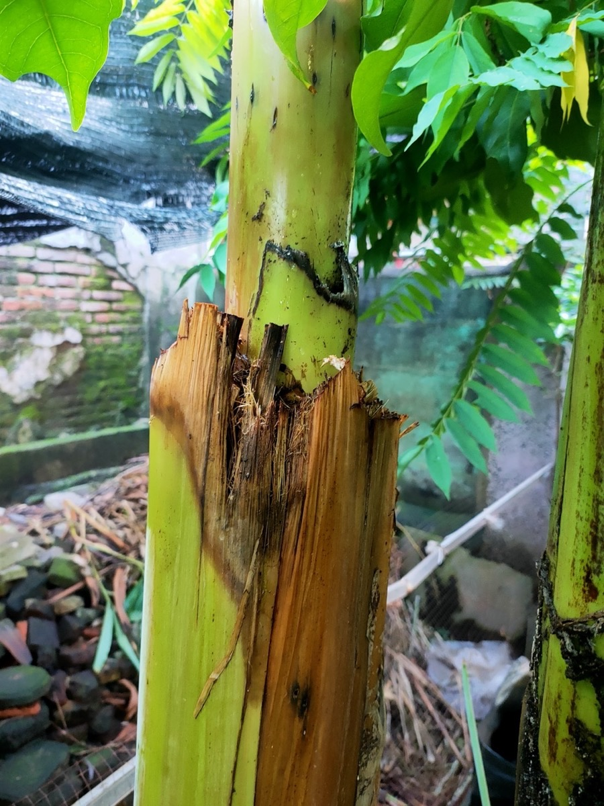
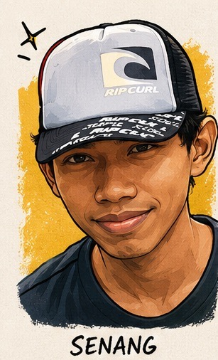

📸 Dokumentasi Kebun

🔍
Pohon Pisang
Villa Ciracas
🪴
Mulsa batang pisang
di atas pot
Filosofi zero waste bukan hanya soal daur ulang plastik.
Di Villa Ciracas, filosofi itu hidup setiap hari di kebun:
tidak ada yang benar-benar sampah kalau kita tahu cara bacanya.

"Serius deh — tiap kali Om Opan lihat batang pisang yang harusnya dibuang itu jadi mulsa beneran, masih kagum sendiri. Alam emang guru yang paling jujur."
Batang pisang mengandung sekitar 90% air.
Ketika dicacah kecil-kecil dan diletakkan di atas media tanam pot,
ia berfungsi seperti "kulkas" alami:
🌡️ Cara Kerja Mulsa Batang Pisang
💧 Menjaga Kelembapan: Kandungan air tinggi melepas uap secara perlahan —
tanah di bawahnya tidak cepat kering meski kena terik matahari Jakarta.
❄️ Mendinginkan Akar: Suhu di bawah lapisan mulsa bisa turun beberapa
derajat dibanding permukaan terbuka — akar tanaman tidak stres panas.
🌱 Pupuk Organik Lambat Rilis: Seiring pelapukan, batang pisang
melepas nutrisi ke dalam tanah — pupuk gratis, langsung dari kebun sendiri.
🦠 Mendukung Mikroorganisme Tanah: Kelembapan dan bahan organik
menciptakan habitat ideal bagi bakteri baik yang menyuburkan tanah.
Ibu mendapat daun pisang segar untuk keperluan dapur.
Tanaman di pot mendapat "kulkas" alami dan pupuk lambat.
Kebun tetap rapi karena tidak ada batang yang dibiarkan membusuk sembarangan.
Satu pohon, tiga manfaat, nol sampah.

"Momen kayak gini yang bikin betah berkebun — selesai kerja, kebun rapi, ibu senang, tanaman senang, Om Opan juga senang. Semua dapat bagiannya."
"Alam tidak punya konsep sampah — yang ada hanya bahan yang belum ketemu
fungsinya. Tugas kita menemukannya." 🌿

"Udah, gitu aja. Satu pohon pisang, habis, beres, rapi. Besok pohon berikutnya. Begini terus sampai kebun makin subur sendiri."
🔄 Siklus Zero Waste Villa Ciracas
🍌 Pohon pisang ditebang → daun → dapur ibu
🔪 Batang dicacah → mulsa organik → tanaman pot
🌱 Mulsa lapuk → pupuk alami → tanah subur
🍂 Daun sisa sapuan → alas kandang ayam → kompos
🐔 Kotoran ayam + tanah → terurai alami → media tanam